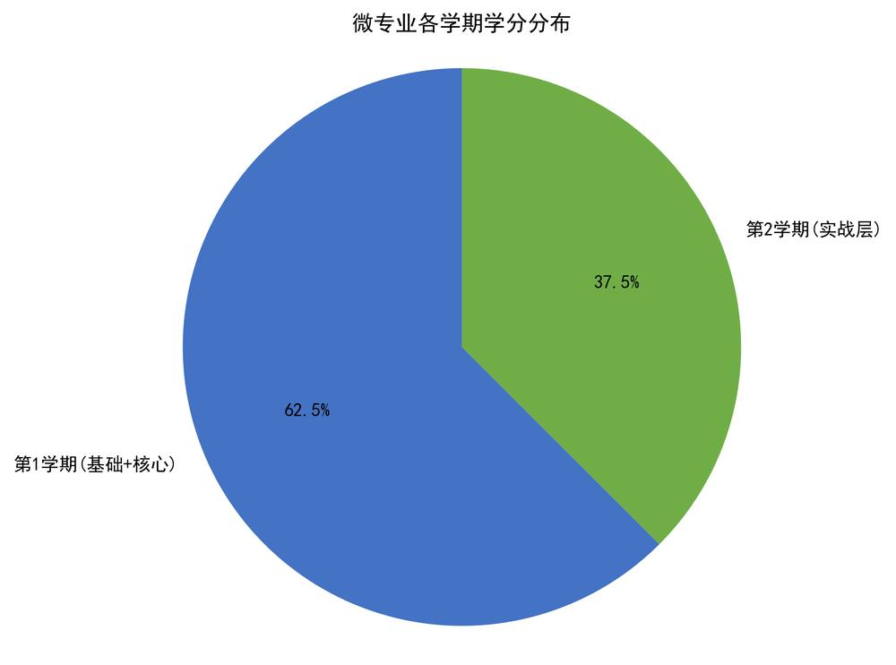
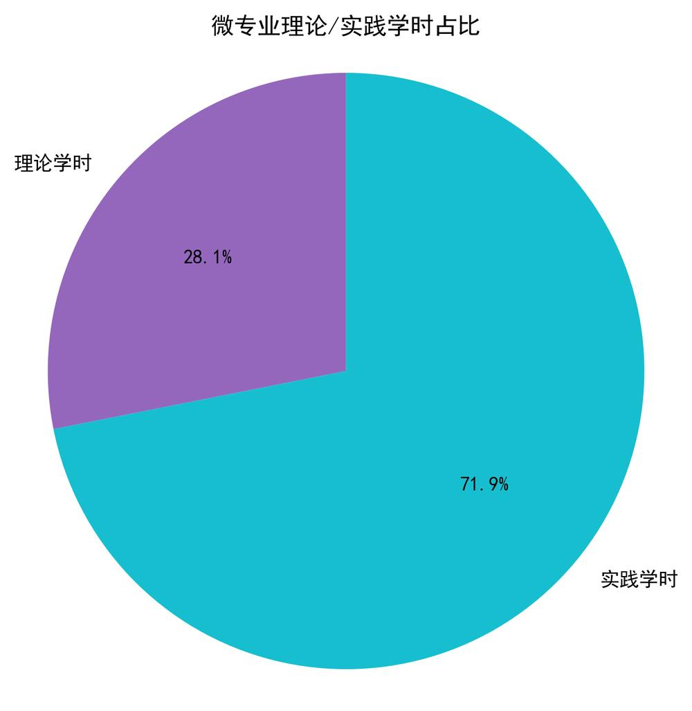
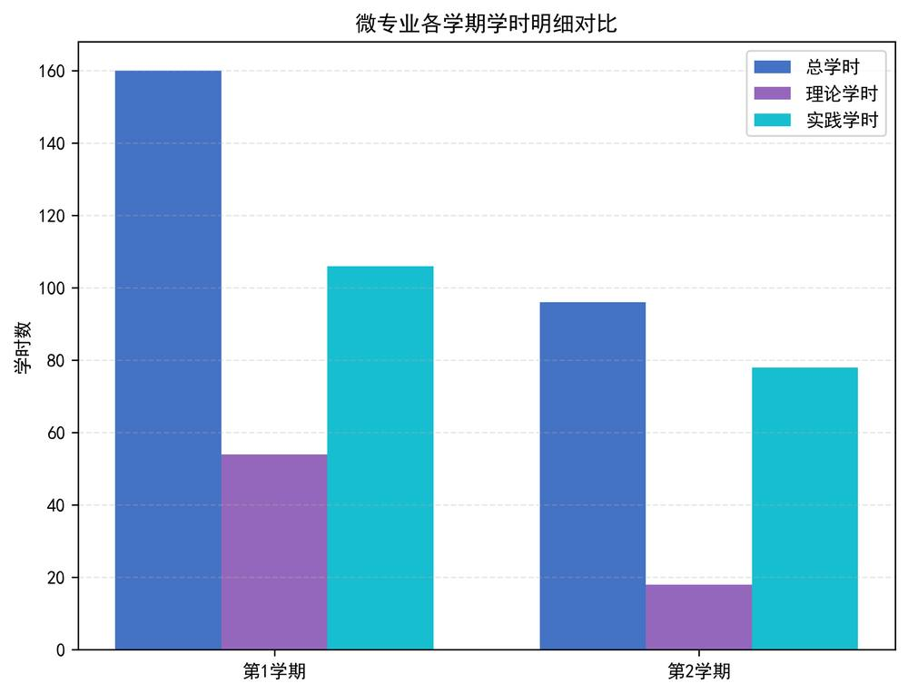

人工智能（AI）技术应用微专业培养方案
一、微专业简介
人工智能（AI）技术应用微专业是我校在现有本科专业目录之外，响应《大连市人民政府关于推动人工智能产业高质量发展的实施意见》产业人才需求，紧密围绕东北及辽宁地区振兴发展对人才的需求，结合学校财经学科特色，针对特定行业领域、核心能力与职业素养，精心设计的系统化核心课程体系。通过课程的系统学习，培养学生对应专业素养和行业实操技能，提升个人发展竞争力，增强人才培养与社会需求的契合度。
随着数字经济与人工智能技术的深度融合，国家相继出台《新一代人工智能发展规划》《“十四五” 数字经济发展规划》《“人工智能 +” 行动实施方案》等政策文件，明确将人工智能列为推动实体经济转型升级的核心驱动力。当前，金融、财税、管理、商务等财经核心领域已成为人工智能技术落地应用的主要场景，行业数字化转型进程中，兼具财经专业素养与人工智能技术应用能力的复合型人才需求持续增长，相关人才缺口逐年扩大。
本微专业依托我校财经学科核心优势，由管理学院牵头建设，聚焦人工智能技术在财经领域的场景化应用，专为我校财经类、管理类、文法类等各专业学生量身打造，以 “财经素养为根基、AI 应用为核心、实操能力为重点”，构建零基础可学、阶梯式成长的培养体系，培养能将人工智能技术与主修专业深度融合，适应财经行业数字化转型需求的应用型复合型人才。
本微专业搭建 “基础认知 - 技术核心 - 场景融合 - 综合实战” 的进阶式培养路径，总学分 16 学分，标准学制 2 个学期，实践学时占比超 70%；采用 “双师型” 教学模式，引入企业真实项目与行业一线导师，配套专业实训实验室、正版财经数据库与开发工具资源，建立全流程教学质量监控与持续改进机制，全面培养学生运用人工智能（AI）技术解决财经场景实际问题的全流程项目执行能力，助力学生适配数字经济时代财经行业智能化转型的核心岗位需求。

图1，各学期学分分布

图2，理论与实践学时占比

图3，各学期学时明细对比
二、计划招生对象与要求
（一）招生对象
我校全日制本科大二、大三在校学生，不限主修专业，学生需具备较强的自主学习能力和学习意愿，能够合理安排时间完成微专业课程学习。
（二）报名要求
主修专业学业良好，学有余力，能够合理分配课余时间，保障完成微专业课程学习与实训任务；
对人工智能技术应用有学习兴趣，具备基础的计算机操作能力，无需编程基础与专业数理基础；
承诺遵守学校微专业建设与管理相关规定，按时完成课程学习、实训与考核环节；
学生报名前需充分了解本微专业的培养方案和课程设置，合理规划学习时间。
三、培养计划
本微专业以 “财经 + 人工智能（AI）” 复合型应用能力培养为核心，遵循 “基础认知 - 技术核心 - 场景融合 - 综合实战” 的进阶式培养逻辑，构建分层递进的课程体系，共开设 6 门核心课程，总学分 16 学分，总学时 256 学时，标准修业年限 2 个学期，其中理论学时 72 学时，实践学时 184 学时，实践学时占比达 71.9%，所有课程内容均紧密围绕财经场景设计，杜绝纯技术的抽象教学。
（一）培养目标
本微专业立足我校财经类院校办学定位，紧扣东北及辽宁地区经济社会发展需求，培养爱国敬业、具备社会责任感与创新精神，系统掌握人工智能基础理论、主流工具实操方法，具备扎实的人工智能（AI）技术应用能力与财经场景落地能力，能够在金融、财务、管理、商务等领域从事人工智能（AI）技术应用相关工作，或通过人工智能（AI）技术赋能主修专业岗位实现提质增效的应用型复合型人才。
通过系统化培养，学生应形成以下核心能力：
技术应用能力：掌握 Python 编程、人工智能（AI）工具实操、智能体开发、数据分析与可视化等核心应用技术，具备独立完成 人工智能（AI）场景落地的基础实操能力；
融合应用能力：能够将人工智能（AI）技术与主修专业知识深度融合，解决财经领域真实场景中的实际问题，实现 “专业 + AI” 的双向赋能；
实践创新能力：通过项目实训，形成人工智能（AI）场景创新思维、工程实践能力与团队协作能力，具备应对行业数字化转型需求的可持续发展能力；
职业发展能力：构建 “主修专业 + 人工智能（AI） 技能” 的复合知识结构，提升就业竞争力与职业发展潜力，为就业、升学、创新创业提供能力支撑。
（二）培养特色
财经 + 人工智能（AI） 深度融合，精准对接行业需求
打破传统技术类课程与财经场景脱节的问题，所有课程均融入金融、财务、管理、商务等我校优势专业的真实案例与实操任务，针对性培养市场紧缺的 “懂财经、会 AI、能落地” 的复合型人才，契合财经行业数字化转型与辽宁大连区域产业发展的人才需求。
零基础阶梯式培养，适配全专业学生
课程体系从零基础入门设计，采用 “基础素养层 — 技术核心层 — 场景实战层” 三阶递进式培养模式，无需编程基础、无需深厚数理基础，适配我校所有专业学生修读，帮助学生实现人工智能（AI）能力与主修专业的融合赋能。
产教融合协同育人，强化实操能力培养
采用校企协同育人模式，联合人工智能与财经领域合作企业共建课程体系，由校内骨干教师与企业行业导师组成双师教学团队，引入大连本地企业真实项目作为实训内容，配套专用实训场地与软件平台，所有课程均为理实一体化课程，实践学时占比不低于 60%，强化学生动手实操能力。
灵活授课模式，不与主修学业冲突
课程原则上单独编班，安排在晚间、周末等非主修课程时段授课，不与主修专业教学安排冲突；采用 “线上 + 线下” 混合教学模式，依托学校超星泛雅平台实现全流程数字化教学管理，兼顾学生主修学业与微专业学习需求。
规范管理与证书加持，助力学生职业发展
严格按照学校微专业建设与管理办法开展教学与管理，学生修满规定学分，由学校颁发官方微专业证书，作为学生学业拓展与能力提升的官方佐证，可在就业推荐表中予以标注，助力学生就业与职业发展。
（三）培养层级与核心目标
第一学期（大二下学期，10 学分）：完成基础认知与技术核心的集中培养，引导学生从财经视角理解人工智能（AI）技术的应用价值，掌握人工智能（AI）基础概念、伦理合规要求、智能办公工具应用，同时系统学习 Python 编程、人工智能（AI）数据分析与可视化等核心技术，夯实交叉学科认知与技术实操基础。
第二学期（大三上学期，6 学分）：完成场景融合与综合实战的能力落地，实现人工智能（AI）技术与财经场景的深度绑定，完成财经领域人工智能（AI）智能体开发与全流程综合项目实战，所有教学内容均来自企业真实需求，学生需输出可直接落地的项目成果，具备独立完成财经人工智能（AI）项目全流程执行的能力。
（四）核心培养保障举措
双师型教学模式：由具备 “财经 + AI” 交叉背景的校内教师与大连本地金融科技企业一线专家组成双导师队伍，每门课程企业导师授课占比不低于 40%，建立联合备课与月度研讨机制，实现理论教学与行业实践深度融合。
产教融合实践体系：与行业优质企业共建校外实践基地，将企业真实项目纳入教学内容，建立优秀学员实习推荐与校招内推机制，打通从课堂到职场的培养链路。
全流程质量管控：建立 “课前审核 - 课中检查 - 课后评估” 的全流程教学质量监控体系，设置 6 项核心监控指标与个性化补充指标，每年对培养方案进行全面评估与动态调整，确保教学内容与行业需求同频。
四、课程 - 能力培养支撑矩阵
为确保培养目标的可落地、可追溯，本微专业建立了课程与核心能力的对应支撑矩阵，明确每门课程对学生核心能力的培养贡献：
| 核心课程 | 技术应用能力 | 融合应用能力 | 实践创新能力 | 职业发展能力 |
| 人工智能（AI）技术与伦理基础 | ★ | ☆ | ☆ | ☆ |
| 人工智能（AI）办公与财经场景应用 | ★ | ★ | ☆ | ☆ |
| Python 财经应用编程 | ★ | ★ | ★ | ☆ |
| 人工智能（AI）数据分析与财经可视化 | ★ | ★ | ★ | ☆ |
| 财经领域 人工智能（AI）智能体开发 | ★ | ★ | ★ | ★ |
| 财经 领域人工智能（AI） 综合项目实战 | ★ | ★ | ★ | ★ |
| 注：★ 表示核心支撑，☆ 表示辅助支撑 |
五、教学安排计划表
| 微专业所属学院 | 微专业名称 | 课程名称 | 总学时 | 理论学时 | 实践学时 | 学分 | 开课学期 | 学期合计 |
| 管理学院 | 人工智能技术应用 | 人工智能（AI）技术与伦理基础 | 32 | 14 | 18 | 2 | 第 1 学期（大二下学期） | 10 学分 / 160 学时 |
| 管理学院 | 人工智能技术应用 | 人工智能（AI）办公与财经场景应用 | 32 | 10 | 22 | 2 | 第 1 学期（大二下学期） | 10 学分 / 160 学时 |
| 管理学院 | 人工智能技术应用 | Python 财经应用编程 | 48 | 15 | 33 | 3 | 第 1 学期（大二下学期） | 10 学分 / 160 学时 |
| 管理学院 | 人工智能技术应用 | 人工智能（AI）数据分析与财经可视化 | 48 | 15 | 33 | 3 | 第 1 学期（大二下学期） | 10 学分 / 160 学时 |
| 管理学院 | 人工智能技术应用 | 财经领域 人工智能（AI）智能体开发 | 48 | 12 | 36 | 3 | 第 2 学期（大三上学期） | 6 学分 / 96 学时 |
| 管理学院 | 人工智能技术应用 | 财经领域 人工智能（AI）综合项目实战 | 48 | 6 | 42 | 3 | 第 2 学期（大三上学期） | 6 学分 / 96 学时 |
| 总计 | - | 6 门课程 | 256 | 72 | 184 | 16 | 2 个学期 | 16 学分 / 256 学时 |
六、核心课程介绍
（一） 人工智能（AI）技术与伦理基础
课程学分：2 学分 | 总学时：32 学时（理论 14，实践 18）课程目标：本课程作为微专业的入门课程，旨在帮助学生建立对人工智能技术的基础认知，理解 AI 在财经领域的应用场景，同时建立 AI 伦理与合规意识，为后续课程打下基础。核心内容：
人工智能基础概念与发展历程，大语言模型、机器学习、计算机视觉等核心技术的通俗解读；
人工智能在金融、财务、税务、商务等财经领域的典型应用案例解析；
AI 伦理与合规基础，包括数据隐私保护、算法公平性、金融 AI 监管要求等；
财经领域 AI 应用的风险识别与防控实践。教学方式：理论精讲 + 案例研讨 + 场景模拟，企业导师分享行业监管实践。考核方式：案例分析报告（60%）+ 课堂研讨（40%）。
（二） 人工智能（AI）办公与财经场景应用
课程学分：2 学分 | 总学时：32 学时（理论 10，实践 22）课程目标：帮助学生掌握主流 AI 办公工具在财经场景中的实操应用，快速提升日常办公与专业工作的效率，实现 “AI 赋能办公” 的快速落地。核心内容：
主流 AI 办公工具（豆包、千问、DeepSeek、文心一言等）的实操方法与提示词工程；
AI 在财务报表生成、会议纪要整理、邮件自动撰写、数据快速整理等场景的应用；
财经领域专用智能办公工具（财务机器人、智能报销系统、智能客服）的实操训练；
个人办公效率提升的 AI 工作流搭建实践。教学方式：理实一体化教学，全程上机实操，手把手教学。考核方式：实操大作业（70%）+ 工具应用报告（30%）。
（三）Python 财经应用编程
课程学分：3 学分 | 总学时：48 学时（理论 15，实践 33）课程目标：针对财经专业学生，零基础入门 Python 编程，重点培养学生使用 Python 处理财经数据、完成自动化任务的能力，无需深厚的计算机基础。核心内容：
Python 基础语法入门，针对财经场景的简化教学，跳过复杂的计算机底层知识；
财经数据的读取与处理：Excel 财报数据、CSV 交易数据、数据库数据的自动化处理；
财经数据爬虫基础：上市公司财报、股票行情、宏观经济数据的自动获取；
财务指标的自动化计算：批量处理上市公司财报，自动计算 ROE、PE 等核心指标。教学方式：边讲边练，所有案例均为财经真实数据，全程上机实操。考核方式：编程大作业（80%）+ 平时实操练习（20%）。
（四）人工智能（AI）数据分析与财经可视化
课程学分：3 学分 | 总学时：48 学时（理论 15，实践 33）课程目标：培养学生使用 AI 技术进行财经数据分析的能力，掌握数据清洗、特征工程、预测建模与可视化的全流程方法，实现从数据到决策的赋能。核心内容：
财经数据预处理与特征工程：缺失值处理、异常值检测、数据标准化；
AI 预测模型在财经领域的应用：股票收益预测、客户信用评分、财务风险预警；
财经数据可视化：K 线图、财务报表可视化、客户分群可视化的实现；
基于 AI 的客户分群与精准营销案例实战。教学方式：案例驱动教学，每个知识点配套真实财经数据的实操训练。考核方式：数据分析项目（70%）+ 可视化报告（30%）。
（五） 财经领域人工智能（AI）智能体开发
课程学分：3 学分 | 总学时：48 学时（理论 12，实践 36）课程目标：帮助学生掌握大语言模型智能体的开发方法，能够独立搭建面向财经场景的专用 AI 智能体，实现专业领域的智能问答与任务自动化。核心内容：
大语言模型与智能体基础，LangChain 等开发框架的入门与实操；
财经知识库的构建与向量检索：财报知识库、税务政策知识库的搭建；
财经智能体的开发：智能财务顾问、智能税务咨询、智能投资助手的开发实践；
智能体的工具调用：自动获取行情数据、自动计算财务指标的工具集成。教学方式：项目式教学，学生分组完成一个小型智能体的开发。考核方式：智能体项目开发（80%）+ 技术文档（20%）。
（六）财经领域人工智能（AI） 综合项目实战
课程学分：3 学分 | 总学时：48 学时（理论 6，实践 42）课程目标：本课程为微专业的综合收官课程，通过企业真实项目的全流程实战，整合前面所有课程的知识，培养学生独立完成财经 AI 项目的能力，实现从学习到职场的无缝衔接。核心内容：
项目管理基础：需求分析、项目规划、团队协作的方法；
企业真实项目实战：从合作企业获取真实需求，学生分组完成项目全流程开发；
可选项目方向：智能财务分析系统、智能投资顾问、智能税务助手、智能风控系统等；
项目答辩与评审：企业导师与校内导师共同评审，输出可落地的项目成果。教学方式：全流程项目实战，双导师联合指导，每周项目进度复盘。考核方式：项目成果（60%）+ 项目答辩（30%）+ 团队贡献（10%）。
附录：
1.《大连市人民政府关于推动人工智能产业高质量发展的实施意见》https://www.dl.gov.cn/art/2025/5/12/art_7546_2461933.html中国政府网
2.《新一代人工智能发展规划》https://www.gov.cn/zhengce/content/2017-07/20/content_5211996.htm中国政府网
3.《“十四五” 数字经济发展规划》https://www.gov.cn/zhengce/zhengceku/2022-01/12/content_5667817.htm中国政府网
4.《“人工智能 +” 行动实施方案》https://www.gov.cn/zhengce/zhengceku/202508/content_7037862.htm中国政府网